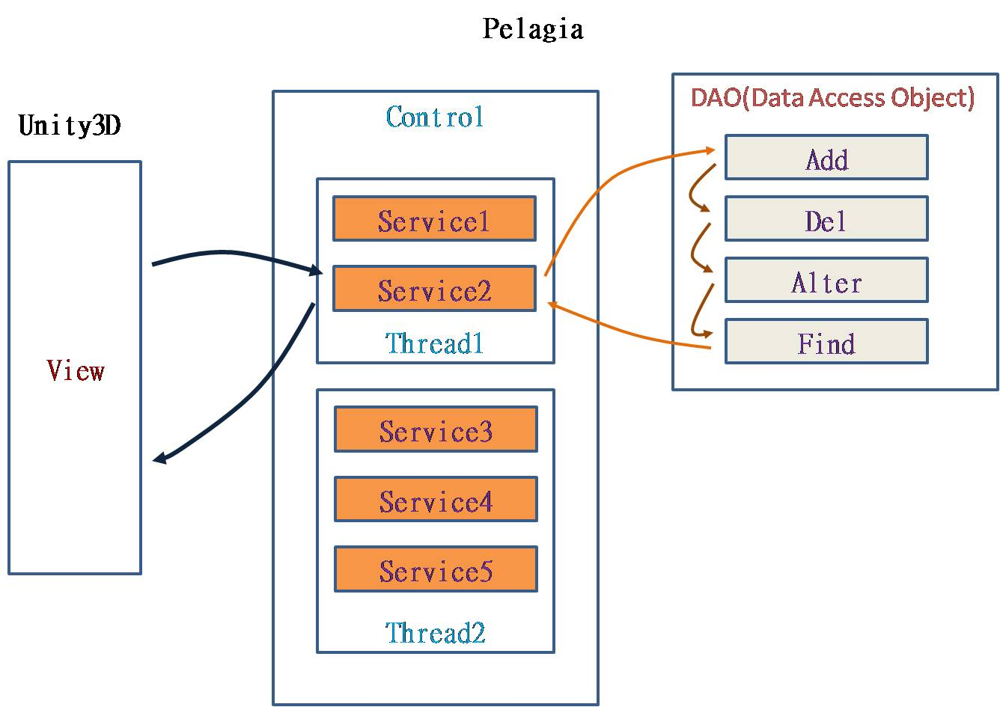

Creating 9000 NPCs in unity2d
The free switching between multi thread and single thread is always an interesting topic.
Developers like to develop in a single thread, accurate and orderly, not easy to make mistakes.
But they are also reluctant to give up the efficiency improvement brought by multithreading.
To improve the performance limitations of unity2d. Here's Pelagia from surparallel.org. It can switch freely between single thread and multi thread. Use Pelagia as you would any other single threaded software. You can switch between single thread and multi thread freely by simple setting.
Recently, Mount & Blade are very popular.
Let sandbox technology get attention again.
Sandbox technology refers to that players can freely develop and get different game scenarios in the game.
The most famous sandbox game also includes Paradox Interactive series, including Victoria II, Hearts of Iron, Europa Universalis, etc.
The key to making sandbox games fun is to create a large number of game characters.
For example, thousands of soldiers are created each time in Mount & Blade.
Creating a large number of game characters is a great challenge to game engine and game developers.
This challenge comes from two aspects.
First, use appropriate technology to make the game support dynamic expansion.
Second, the game is decomposed into different threads to maximize the utilization of system resources.
Here are three examples of how to do this.
The first example is roguelike from unity. You can find its introduction and code at the following address
https://learn.unity.com/project/2d-roguelike-tutorial
https://github.com/surparallel/unity_example_of_pelagia/tree/master/Roguelike
This example has three performance issues
1, Orchestration causes game blocking.
2, Camera follow is not supported.
3, Collision detection will fail, resulting in overlapping of NPC.
So I made big roguelike for the above three problems.
You can find it in the link below.
https://github.com/surparallel/unity_example_of_pelagia/tree/master/Big%20Roguelike
Big roguelikefe is perfect for stress testing. We enlarged the map a thousand times. And set the number of NPC to 3000.

This reaches the limit of single thread.
Why single thread? Because only one thread is in full working state.
When you finish the first challenge, you will find that no amount of software optimization can significantly improve performance. At this time, more radical optimization plan should be considered. Ordinary technical level is far from enough to meet the sandbox game.
The battle of a few or even a dozen people can be lethargic.
In order to solve the problem that one core is full the multiple cores to be idle. I created a excemple ultimate roguelike.
https://github.com/surparallel/unity_example_of_pelagia/tree/master/Ultimate%20Roguelike
Ultimate roguelike can create 9000 NPCs.Three times more performance
The pressure on unity is also very small.
CPU load increased to 60%.
It seems very simple to break the game into different threads. But 99% of game makers can't. Therefore, it is derided as a single core game by players. What game designers need is simple technology to make games colorful. Only in this way can we spare no effort to design more complex and vivid plots.
There are many options for multithreading optimization. It takes years to learn multithreading from scratch. Pelagia only needs you to know the basic asynchronous message concept to write high-quality multithreaded software.
If unity creates a world, the logical level is the mirror image of different forms of the world. Unity is a world made up of color, and logic layer is a world made up of other data. Link this data through asynchronous messages is the world you see in unity. Pelagia depends on how the data is used, read and write, or logical dependency. The data is automatically divided into different logical layers, and each logical layer is equipped with message routing, hard disk read-write cache and other components. This allows you to quickly build a layered world. And put each layer into a different thread. This is the same way that we split the software system in practice. Pelagia just automates this complex process.